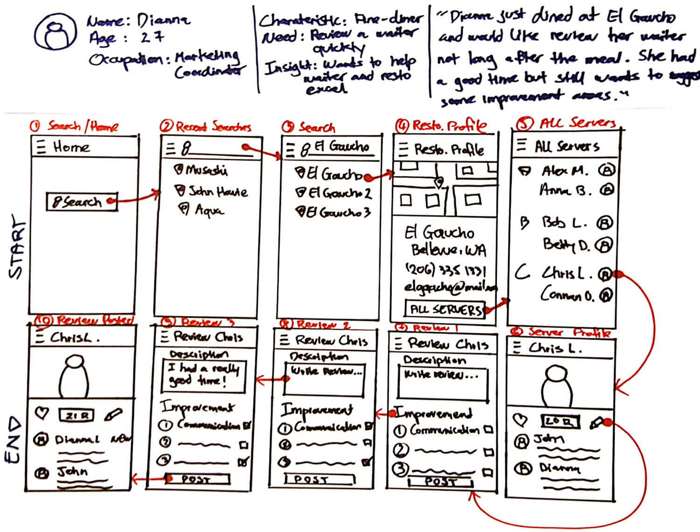
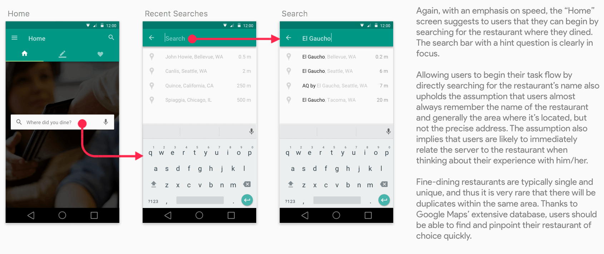
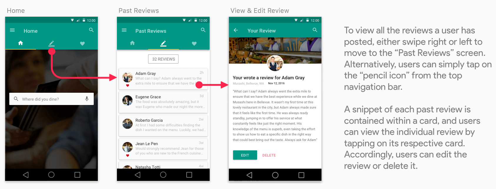

The challenge of reviewing wait staff
While there are many ways to rate and review restaurants, these are not focused on evaluating individuals servers. As part of my design interview process for Google, I've taken up the challenge of designing an experience where diners can submit positive comments and constructive suggestions for the wait staff, and servers can use this feedback to both improve and help secure new employment.
As a self-proclaimed foodie, this prompt carries a great sense of appeal to me. It's definitely not uncommon for me to have a great dining experience with amazing food and quality service, and while the food aspect is properly taken care of by the likes of Yelp and a multitude of other apps, servers often find themselves at the mercy of kind customers (like me!) who would find a way to leave a message of appreciation or feedback. In my experience, this typically comes in the form of a quick on-the-spot chat, or a short note on the bill. The lack of a platform where such reviews for servers can be generated is, in fact, something I've been thinking about for a while.
Laying out the process
With one week to produce a high-level flow and supporting wireframes, I certainly want to make sure that the project's design process is as user-centered as possible.
(I almost told myself to map out a high-level overview of the process through which this project was executed. It was going to be a simple, straight, and a linear depiction of the different steps and methods I applied. But then I suddenly realized that the reality of all design processes are much wilder than the one I was going to draw. It's fluid, dynamic, has a lot of back-and-forth's, and can get messy sometimes. Even for a small-scale project like this one, while I did have an internalized process in mind, it never was never going to follow a solid step-by-step path. So here it is, my design process for Re.V, exactly like how it's illustrated in the picture above. For the sake of clarity, though, I've included the methods utilized in this project at the top of in a traditional linear fashion.)
Starting out with user interviews
I didn't want to design with unsupported assumptions, which I had a lot at the beginning of the exercise. I wanted to at least strengthen some of these assumptions by communicating with real users. To do this, I recruited three acquaintaines who also identify themselves as prominent foodies and conducted a one-hour interview with each. Essentially, my goal was to take a deeper step into these users' context - their needs, goals, frustrations, and challenges - around the task of reviewing a restaurant server. A better understanding of this element would have helped me envision a clearer design opportunity for this challenge.
Me (left) interviewing one of the three recruited participants.
Amongst my interviewees' many remarks, here are some of the more noteworthy ones:
Affinity diagramming
To better organize the data collected from my interviews, and concurrently to give myself a chance to step back and look at the big picture, I conducted an affinity diagram exercise. Affinity diagrams are great because they allow you to rigorously dig through your qualitative data and compartmentalize them into similar encompassing themes or categories that will better tell the underlying story.
Trying to be resourceful and make use of the hallway wall because I couldn't get access to any conference rooms with whiteboards (it was midterm week...).
Strengthening my assumptions with key insights
The interviews and affinity diagram helped me consolidate my previous assumptions into a set of key insights that, in a way, were still assumptions (given the small scale of the user research) but were definitely more sound. Effectively, they emerged as the primary themes uncovered during the affinity diagram exercise, and are as follows:
- Diners mostly only care about and pay attention to the wait staff's service quality at fine-dining restaurants.
- Diners prefer to leave a review immediately and quickly during or after their dining experience. Generally, they want to deliver these messages when the experience is still fresh in their minds.
- Diners mostly know the exact name of the restaurant where their positive experience occured, even after a long time. They also tend to remember the wider area/city/town where it’s located, but rarely the precise address of the location. When thinking about a specific server who has served them in the past, diners are very likely to relate him or her to the restaurant where the dining experience took place.
- Diners mostly care about three core aspects of the wait staff's service quality: Communication, Speed & Timeliness, and Menu Knowledge.
- Diners like to be served again by the same server who has provided a great experience on one of their earlier visits.
- Diners feel encouraged to offer positive reviews, but when it comes to suggestions for improvement or generally feedback that could deal with the wait staff's weaknesses, they prefer to do it privately with the servers and not have to express their opinions in public. This is especially true for diners who frequent fine-dining restaurants.
Humanizing research data with a user needs statement
To encapsulate all the interview feedback and meaningful information extracted from them, I created a simple "user needs statement". In a bigger project, this could upgrade to become a persona. Nonetheless, the essence remains the same: putting a name and face on the target user group, along with a short description of their context to effectively keep the design goals focused on users.
Driving the creative process with ideation
With these gathered insights and a better understanding of my users, I jumped straight to the creative stage. As the time is limitted and the process speedy by nature, I knew it was best to ideate by throwing out as many ideas onto the table as possible. Realizing that this requirement saw a really good fit in Google Ventures' Design Sprint approach - itself engineered to drive fast-paced and time-pressured one-week design sprints - I decided to rely on their unique ideation method and recruited a designer friend to help broaden the breadth and diversity of potential ideas.
(Note that my partner's involvement in this project was solely limitted to the ideation and weighted-voting stage).
Accordingly, we executed four separate 15-minutes design sessions, where each of us would utilize the 15 minutes alloted to sketch out a different user flow with a set of supporting screens. Rather than actively communicating with each other during these design sessions, we decided to work separately on our own and only gather when the sketches were done. Our only design tools were markers and papers, which were fast and efficient, and whose limited fidelity allowed us to truly focus on the flow rather than the features.

A side note on mental modelling
Throughout the ideation stage, one exercise which I relied on a lot to drive me creative thinking is mental modelling. Typically in the real-world scenario, I like to collaborate with my whole team on mapping out users' mental models, essentially asking ourselves what kind of questions users could potentially have at each stage in their workflow, and what would a desired reaction be like. Based on these questions and desired reactions, we would accordingly brainstorm around different ideas that may fit into such scenarios. For the small scale of this project, I mainly created these mental models in my mind as I ideated through my sketches.
Decision-making with weighted-voting
One of the key tenets of Google Ventures' Design Sprint model is that you have to be able to make quick decisions without falling into the trap of "design by committee". Given the lack of time, how can we ensure that the best ideas are agreed upon by a group of team members and yet the final choices uphold a unifying vision?
The solution is offered through "weighted-voting". The way it works is that each team member would be given a set of small blue round stickers, and with all the sketches stuck on the wall, they would place a sticker next to a design component or feature which they like. As all the blue stickers are put next to their respective sketches, the team leaders would then be given a few big red round stickers and asked to put them next to the overall flow or idea that they would like to move forward with. Essentially, I wanted to apply this weighted-voting method to this project, albeit at a much smaller scale. This meant that as a two-members team, we had to act as both individual contributors as well as leaders.
The logic was simple, we wanted our final direction to combine the best features and components (the blue stickers), which together would fit into a high-level flow that was popularly voted (the red stickers). You might have noticed that due to the lack of round stickers, we made use of squared sticky notes instead. It perfectly sufficed.
Early user flows and wireframes
At this point, I was already starting to have a clearer vision of how my design solution could potentially turn out. Still, I needed to refine the high-level information architecture. Hence, as I was reviewing our sketches, I actively sketched out simple flow charts to visualize different tasks users could accomplish in order to achieve their ultimate goal of reviewing a server, as well as identify how information within the system could be organized and interact with each other. For me it was basically an iteration on the ideated sketches, as I commenced to integrate and compartmentalize different proposed features into one single product.
As the user flows were gradually finalizing, so too were the designs beginning to formalize. From the earlier basic sketches, I made multiple iterations of refinement and produced a set of low-fidelity wireframes.
Engaging users in the design process
I tried to solicit as much feedback from potential users as possible by sharing with them multiple versions of my low-fidelity wireframes. I didn't have time recruit for participants who would best fit my user criteria, but I did worked my best to find the ones who at least have gone fine-dining before. My goal was simply to engage users in the design process and have their inputs be carefully considered. Doing this certainly helped me reconsider some of my design choices, as well as opend up new paths that I didn't think of earlier.
Coming up with the final proposed solution
A few more iterations and I was able to transform my low-fidelity wireframes into mockups that came with a higher fidelity. This entails the incorporation of a simple color pallette, typography, grid structure, with a hint of branding. I also paid careful attention to the design of various components such as buttons, forms, search and navigation bar etc. to ensure that they effectively contributed to the overal usability of the system, as well as its clean look and feel.
From a high-level standpoint, here is the finalized user flow.
The guiding product and design principles. What is Re.V?
I packed the final experience into a mobile app called "Re.V". I'm going to have to apologize in advance and inform that there's no intelligent underlying meaning behind the name. It simply is the first three letters from the word "review" with, I guess, a little twist. Essentially, here's list of guiding product and design principles on which Re.V was created. Note that most of these principles and ultimately design decisions have been based off the "strengthened assumptions" gathered earlier in the process.
- Re.V allows users to review and provide positive feedback to servers who have helped contribute to their memorable dining experience. With the app, users can easily write a short review as well as pinpoint areas which they believe the server could improve on. These areas include Communication, Speed & Timeliness, and Menu Knowledge.
- Re.V comes with two versions. One for diners, and one for servers. For the purpose of this project, only the design for the diner version was created. Nonetheless, the idea behind the server version is that they will be able to easily track and monitor feedback from their customers. Since diners are provided with the ability to poinpoint areas which the server could improve on, this information would be privately shared with the server and accordingly only they can access it using the server version of the app.
- Re.V is focused on speed. With the app, users will be able to quickly fulfill their goal of reviewing a server with a minimal number of steps.
- Re.V is mobile-first. While a web version of the app could be explored, Re.V is best utilized in scenarios where the users are out on the road and need to write a quick review (i.e. when they just finished dining and would like to leave an immediate feedback).
- Re.V incorporates a voice-supported intelligent personal assistant. Users can use this feature to conduct their search activities. While this component wasn't deeply dived into, it remains an integral element of Re.V's vision to continuously address accessibility problems.
- Re.V is inspired by Material Design concepts and follows its design guidelines.
- While the design concepts in this project are mostly Android-based, Re.V strives to offer both Android and iOS native apps.
The final mockups
And alas! Here are the final proposed mockups for Re.V. To better illustrate the app's key design decisions and their logic, I've laid out the main interactions that together could define a basic workflow.
LOG IN
SEARCH
FIND YOUR SERVER
REVIEW YOUR SERVER
Note that while I've given users the ability to pinpoint on specific areas they believe a server could improve on, I have not designed a way for this data to be represented on the server's profile. My reasoning is based on the assumption that although diners feel very encouraged to provide positive feedback in public, they don't feel as willing to contribute to the presentation of information that could be perceived as a server's weakness. On the other hand, if this information is shared privately with the servers themselves, that wouldn't be considered an issue.
PAST REVIEWS
FAVORITE SERVERS
SUGGESTION TO REVIEW WITH GEOLOCATION
SIDE DRAWER MENU
Reflection: A note on the importance of research
When I first started this project, I had a lot of different ideas on how I wanted to execute it. Mainly the biggest question on my mind was what kind of design methods would have made sense for a small design exercise that had to be finished in less than week time. Making trade-offs was certainly a significant lesson I had drawn from Re.V, as I needed to maneuver around the process in a way that would have allowed me to take into as much consideration of the users' context as possible, while simultaneously still giving myself the space and time to be creative and detailed with my design.
On the other hand, this project taught me another great lesson about the importance of quality user research. I started the challenge with a set of questions, and as I found myself finishing up the very last bit of the final design, it occured to me that my mind was filled with even more questions than when I started. I believe it is a good sign and generally a good problem to have. Accordingly, I think a more defined user research study would have helped me clarify a lot of these questions. If this were to be a real product in the real world, some investment into user research could certainly have helped us develop different user personas as well as reveal more user traits, desires, and contexts that ultimately would have helped refine the app's design even further. For instance, here's an interesting question I have in mind that surely would see some benefits in user research:
"Will diners exhibit a different set of behavior regarding the service quality in restaurants that have different cultural or ethnic orientation/menus?"
With this in mind, there're' a few things I would like to address if I have more time and resources dedicated to this project:
- Conduct more research to better understand different user groups and how their demographic backgrounds might influence their behavior. Accordingly, develop more and stronger personas that could represent these user groups and the different user stories relevant to them.
- Focus more on the information architecture of the app and how that might change as the app sees a potential to scale.
- Conduct usability tests to engage users in the design process.
- Explore different design directions that could improve the accessibility of the app.
- Using tools like Framer.js, Pixate, Form, or InVision to start working on the motion design aspect of the app.
- Explore ways in which the app could tie in with the bigger technology ecosystem, taking into account different aspects, ranging from simple integrations with other apps (i.e. Yelp) as well as innovative areas such such as Machine Learning, Artifical Intelligence, Internet of Things etc.
- Design an iOS version of the app.
- Design the server version of the app.
In any cases, I hope I was able to provide you with at least a small glimpse into my design process, approach, and thinking. If you have any after-thought questions, please feel free to reach out anytime and I would be more than happy to assist!
Me working my way through the last stage of the design exercise: putting it all together. A slight miscalculation on my end kind of underestimated how much intellectual thinking was required for the presentation aspect of my work. So unsurprisingly I ended up sitting in that same spot for the entire weekend with only a Mac, Sketch, Illustrator, a lot of papers and markers, and a smiling Steve Jobs as an inspiration to help me cruise through this challenge. It truly was an amazing experience.